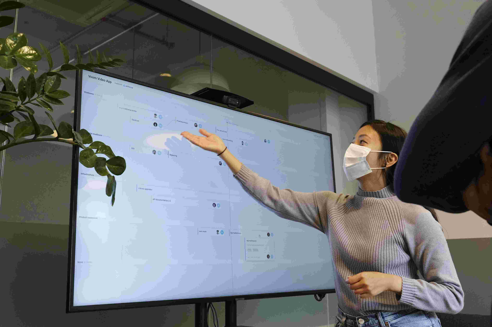

Bing Chat
Precisa criar imagens?
O BING é uma ferramenta que oferece a criação rápida de imagens e logotipos por meio de mensagens de texto via chat.

Tome.app
Quer gerar um documento?
O TOME é um utensílio que cria presentações de forma eficiente, basta aplicar um texto no chat e ele organizará da melhor forma.
Chat-PDF
Quer resumir um PDF?
O CHATPDF pode ler qualquer PDF, responder e fazer perguntas relacionadas ao conteúdo, para melhor compreensão.
Supernormal
Deve gravar uma reunião?
O Supernormal tem ferramentas de transcrição e gravação de reuniões, geração de atas, notas em vários idiomas, entre outros.